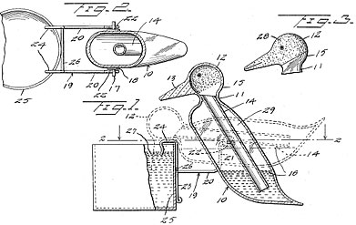
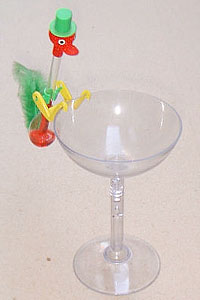
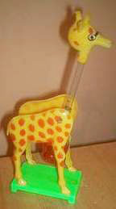
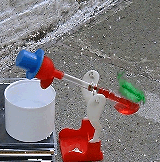
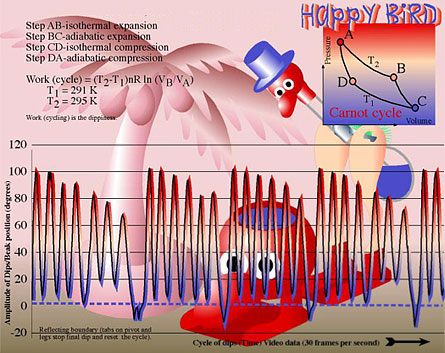
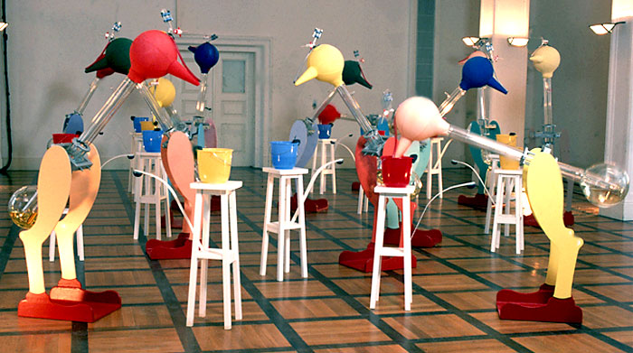

|
 Dippy Drinking BirdsThe Edmund Scientific company has been selling engineering, robotic, and astronomy supplies since 1942 -- but their stand out best seller and unofficial mascot is the Dippy Drinking Bird. Dippy reached new heights of popularity in 1995, during an episode of The Simpsons in which a 300-pound Homer sets Dippy in front of his keyboard to automate the monitoring of the Springfield nuclear plant. In 1946, thermodynamics engineer and chemical hobbyist Miles V. Sullivan filed a technical illustration with the U.S. Patent Office for his version of a bird-shaped Heat Engine. The structure of the bird was comprised of two glass bulbs: one for the head (and beak, and jaunty hat, and googly eyeballs) and another for the lower body (and shakeable tail feathers). Originally Dippy was clamped along the side of a water glass, but the balancing mechanism would later evolve into tall, stork-like legs upon which the glass bulbs were balanced and perched. Variations included duck shapes and giraffes, but the essential mechanics of the device remained constant. A thin glass tube connecting the two bulbs from the inside extended down into the lower body, where it dipped into a reservoir of Freon-based liquid (now banned) or colored methylene chloride. This is the fluid that rises and falls to make Dippy bobble back and forth. Most of the air is vacuum-sucked from the glass structure at the factory, after the liquid is placed inside. Although the head and upper part of the glass tube appear to be "empty", they are actually full of active, vaporous gas from the methylene chloride, which doesn't take much heat energy to turn from a vapor into a liquid, or vice versa. In the scientific community, that's called a "low latent heat of evaporation". Methylene chloride, also called dichloromethane (CH2Cl2), is a volatile, colorless liquid with a chloroform-like odor. It's used in various industrial processes in many different industries -- including paint stripping, pharmaceutical manufacturing, paint remover manufacturing, metal cleaning and degreasing, and so forth. The most common means of exposure to methylene chloride is inhalation or skin exposure, i.e. your son or daughter smashes Dippy against the windowsill and drinks the holiday fruit punch inside. OSHA considers methylene chloride to be a potential occupational carcinogen: in studies, mice exposed to airborne methylene chloride developed cancers and tumors of the lung and the liver. Anyway, if the head bulb is slightly cooler than the body bulb, a temperature differential occurs. The methylene chloride turns from a liquid to a vapor, and as it rises up the glass tube, vacuum action pulls the liquid up along with it, like a thermometer. When it nears the top, Dippy's head tips forward on the swing-leg hinges, dunks his nose into a glass of water and appears to drink. While the whole family sits around applauding and taking pictures, Dippy's red felt-covered beak, face, and head are absorbing water from the drinking glass. As the moisture evaporates from the fabric, the head becomes cooler than the body and internal pressures within the chamber are equalized. The vapor turns back into liquid, the liquid drops to the lower bulb, and Dippy's center of gravity pivots him to his normal, natural, upright position. Under the right conditions, Dippy can tipple and topple back and forth quickly, dook-dook-dooking like there's no tomorrow. But don't try to be clever in front of your stupid friends and put alcohol-based beverages in Dippy's shotglass: the swinging pendulum motion of the body can accelerate the chaos of the liquid and vapor, and the evaporation process from Dippy's head requires liquid no heavier than water. You can, however, "trick" Dippy into drinking by positioning a lamp toward the bottom bulb. If you limit the penumbra (falloff) from the light so Dippy's head remains cool, he'll go back and forth and even drink without a water glass for hours at a time. But exercise caution: lamplight can produce excessive heat, and Dippy's glass will burst. One Dippy Bird hack involves painting the body black so the body becomes warmer more quickly than the head. In 1966, civil engineer and logistics expert R.B. Murrow developed an abstract study recommending that the possibilities of a Dippy Drinking Bird heat engine be investigated to see if it could be further developed into a useful machine which performed low-power requirement tasks in primitive environments (such as the one addressing the Egyptian low-water-lift agricultural problem). In the report, such an engine was described in considerable detail. Direct experiment has shown that the Dippy Drinking Bird works best on small scale, and does so particularly well under the arid climatological conditions of Egypt and many other underdeveloped countries. By measuring the power output of a drinking bird, attaching it to a windglass and using it to lift heavy paper clips, scientist Don Rathjen reported the successful extraction of a nanohorsepower of work (about a microwatt). Artist Daniel Reynolds spent six years and $20,000 developing his most brilliant work to date: a flock of fifteen enormous drinking birds filling an entire art gallery. Each is six and a half feet tall, and 3,000 times heavier than the original Dippy. The birds are made of pyrex glass, and require a special vacuum attachment so the liquid can travel efficiently. The head of the Institute of Thermodynamics at the University of Stuttgart in Germany turned over all their research and development resources to assist in the project. Unfortunately, the art and science of Dippy the Drinking Bird were only the precursor to cheaper, gimmicky Hand Boiler devices also known as "libido detectors" -- the looped and twisted glass sculptures containing a liquid which bubbles and churns like a tempest in a teacup with the heat from your bare hand. Once the bulbous end is out of your hands, it takes a few moments for the liquid to cool down. No delightful bird shape, no pointy beak, no pretty eyes or feathers -- just another example of the dumbing down and over-pussification of America's youth. You can probably find Hand Boilers at the Hallmark store near the candles and cat calendars. Dippy Drinking Birds, while hardly extinct, are now primarily indigenous to magic shops. |